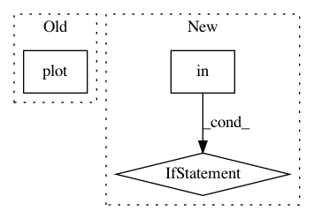

f18c8c676110cd20012c2a790a943f443506f33e,batchflow/utils.py,,plot_results_by_config,#Any#Any#Any#Any#,57
Before Change
for y, (source, val) in enumerate(variables):
ax = axs[n_vars * x + y]
(df[df["name"] == source]
.pivot(index="iteration", columns="repetition", values=val)
.rename(columns=lambda s: "rep " + str(s))
.plot(ax=ax, **kwargs))
ax.set_title(config + "\n" + source + " " + val)
ax.set_xlabel("Iteration")
ax.set_ylabel(val.replace("_", " ").capitalize())
ax.grid(True)
After Change
.pivot_table(index="iteration", columns=cols, values=val)
.rename(columns=lambda s: "rep " + str(s), level=0))
if "cv_split" in df.columns:
res = res.rename(columns=lambda s: "split " + str(s), level=1)
res.plot(ax=ax, **kwargs)
ax.set_title(config + " " + source)
ax.set_xlabel("Iteration")
ax.set_ylabel(val.replace("_", " ").capitalize())
In pattern: SUPERPATTERN
Frequency: 3
Non-data size: 3
Instances
Project Name: analysiscenter/batchflow
Commit Name: f18c8c676110cd20012c2a790a943f443506f33e
Time: 2019-11-12
Author: 7520522+a-arefina@users.noreply.github.com
File Name: batchflow/utils.py
Class Name:
Method Name: plot_results_by_config
Project Name: hyperspy/hyperspy
Commit Name: 5b20dc43dc54e82847c2a9fd7b75fe4bd88326aa
Time: 2018-04-17
Author: eric.prestat@gmail.com
File Name: hyperspy/drawing/utils.py
Class Name:
Method Name: plot_images
Project Name: spectralpython/spectral
Commit Name: 0817e41d3d104da9a8e4ffb84d12fd72e5687434
Time: 2017-03-26
Author: thomas.boggs@gmail.com
File Name: spectral/graphics/spypylab.py
Class Name:
Method Name: plot